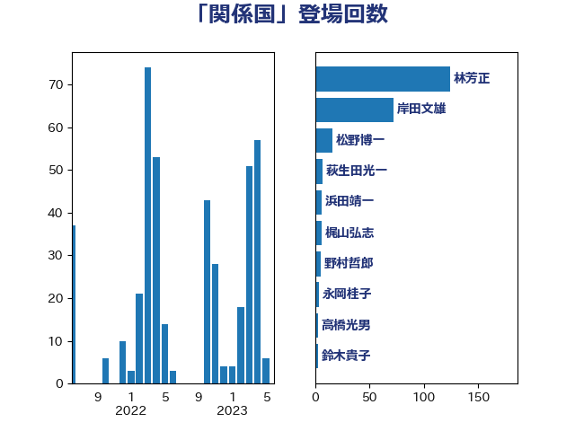

単語「関係国」

| 林芳正 | 自由民主党 | 124 回 |
| 岸田文雄 | 自由民主党 | 72 回 |
| 松野博一 | 自由民主党 | 16 回 |
| 萩生田光一 | 自由民主党 | 7 回 |
| 浜田靖一 | 自由民主党 | 6 回 |
| 梶山弘志 | 自由民主党 | 6 回 |
| 野村哲郎 | 自由民主党 | 5 回 |
| 永岡桂子 | 自由民主党 | 4 回 |
| 高橋光男 | 公明党 | 3 回 |
| 鈴木貴子 | 自由民主党 | 3 回 |
| 茂木敏充 | 自由民主党 | 3 回 |
| 田村憲久 | 自由民主党 | 3 回 |
| 後藤茂之 | 自由民主党 | 3 回 |
| 山田賢司 | 自由民主党 | 3 回 |
| 加藤勝信 | 自由民主党 | 3 回 |
| 笠井亮 | 日本共産党 | 2 回 |
| 穀田恵二 | 日本共産党 | 2 回 |
| 石井啓一 | 公明党 | 2 回 |
| 柴田巧 | 日本維新の会 | 2 回 |
| 末松信介 | 自由民主党 | 2 回 |
| 斉藤鉄夫 | 公明党 | 2 回 |
| 山添拓 | 日本共産党 | 2 回 |
| 小西洋之 | 立憲民主党 | 2 回 |
| 大家敏志 | 自由民主党 | 2 回 |
| 吉川ゆうみ | 自由民主党 | 2 回 |
| 伊藤俊輔 | 立憲民主党 | 2 回 |
| 鬼木誠 | 立憲民主党 | 1 回 |
| 高良鉄美 | 無所属 | 1 回 |
| 高木啓 | 自由民主党 | 1 回 |
| 阿達雅志 | 自由民主党 | 1 回 |
| 門山宏哲 | 自由民主党 | 1 回 |
| 鈴木馨祐 | 自由民主党 | 1 回 |
| 進藤金日子 | 自由民主党 | 1 回 |
| 赤嶺政賢 | 日本共産党 | 1 回 |
| 谷公一 | 自由民主党 | 1 回 |
| 西野太亮 | 自由民主党 | 1 回 |
| 西村康稔 | 自由民主党 | 1 回 |
| 舟山康江 | 国民民主党 | 1 回 |
| 美延映夫 | 日本維新の会 | 1 回 |
| 緒方林太郎 | 無所属 | 1 回 |
| 細田健一 | 自由民主党 | 1 回 |
| 竹内譲 | 公明党 | 1 回 |
| 神谷裕 | 立憲民主党 | 1 回 |
| 磯崎仁彦 | 自由民主党 | 1 回 |
| 石原正敬 | 自由民主党 | 1 回 |
| 源馬謙太郎 | 立憲民主党 | 1 回 |
| 森本真治 | 立憲民主党 | 1 回 |
| 本村伸子 | 日本共産党 | 1 回 |
| 木原誠二 | 自由民主党 | 1 回 |
| 斎藤アレックス | 国民民主党 | 1 回 |
| 平木大作 | 公明党 | 1 回 |
| 平将明 | 自由民主党 | 1 回 |
| 山田美樹 | 自由民主党 | 1 回 |
| 山口那津男 | 公明党 | 1 回 |
| 小野田紀美 | 自由民主党 | 1 回 |
| 小田原潔 | 自由民主党 | 1 回 |
| 寺田稔 | 自由民主党 | 1 回 |
| 吉良州司 | 無所属 | 1 回 |
| 吉田宣弘 | 公明党 | 1 回 |
| 佐藤啓 | 自由民主党 | 1 回 |
| 伊波洋一 | 無所属 | 1 回 |
| 中川郁子 | 自由民主党 | 1 回 |
| 中川康洋 | 公明党 | 1 回 |
| 上田清司 | 国民民主党 | 1 回 |
| 上杉謙太郎 | 自由民主党 | 1 回 |